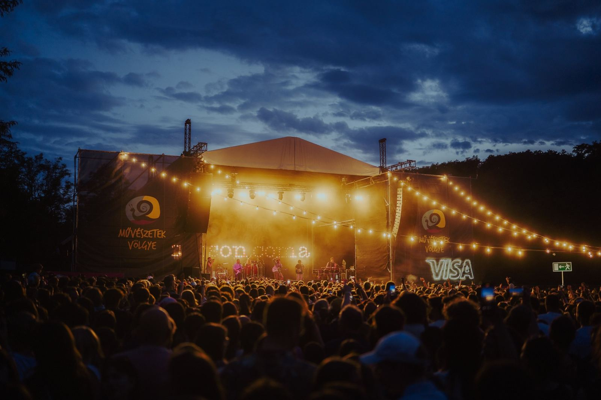

Festivals · Arts
Valley of Arts 2027 (Művészetek Völgye)
- Dates
- –
- Location
- Kapolcs, Hungary
- Format
- In-person
- Category
- Arts
- Industry
- Multidisciplinary arts festival
- Organiser
- Művészetek Völgye / Valley of Arts
- Official website
- https://www.muveszetekvolgye.hu/
About
36th edition. Official copy: Hungary’s largest multidisciplinary arts festival, 10 days, three villages, 4,000+ events. Dates are local to the host city (Central European Time, UTC+1 / UTC+2 in summer).
Topics: arts festival, music, folk, village festival.
No organiser attendance figure found on the official pages fetched 24 Nov 2026. Ranked by our estimated size tier 'large' (30,000-100,000 attendees/visits), a judgement from format, venue and scale, not an official number.